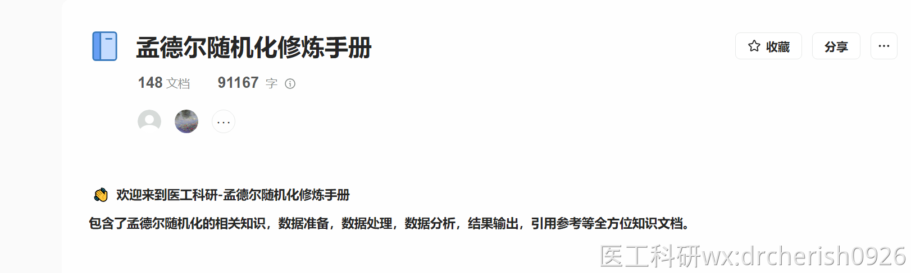

一、前言
IEU在线数据库不稳定的情况，自2023年6月开始出现后，到2024年4月，一直都处于经常性502状态，这段时间IEU的后台服务器一直无人维护，使用异常艰难，所以医工科研团队想尽办法解决各种IEU服务导致的问题（就像打怪兽一样，出来一个，消灭一个），开创性的开发了团队独有的，且中国唯一一个可在线提取数据库-----云上GWAS在线数据提取系统。
当前IEU上还是存有大量的在线数据可以使用，虽然大部分数据已经很旧，但是这个在线数据库是MR入门的必选数据库之一，基本上都可以借用这个数据库完成基础的分析。
虽然24年5月，IEU开启了新的API接口，并增加了Token验证，极大程度的减少了502问题的发生（然并卵，还是经常性有502出现），但是还是没有回到23年6月之前那样，体验友好，并且新增了各种各种的问题，导致无法进行分析。
下面整个文章是讲针对现有的问题的提出的解决方案，以及全方位总结新的API接口使用上的各种问题。
总结来说，按照下方步骤可以进行：
1.更新配置的token
2.还不行的话，使用本地数据操作
ieu配置token的网址，有时候晚上上不上去，白天可以再尝试。
记录于：2024年7月20日 ieu旧的api接口已经不能正常使用，一定要用配置token解决。网上别人给的各种切换旧api的教程已经没有参考价值，不要再使用了。
使用IEU在线功能，配置Token是必须要做的，请自行按照流程配置。
二、如何针对应解决
502问题需要针对问题拆解，针对性解决，如果你遇到了下方的情况，可以对号入座，解决问题：
先确认是哪一个步骤的提示，并针对性解决
1.如果正在提取IEU在线暴露，请耐心等待程序重试，或使用本地数据，或检查👉阈上医学·云上GWAS引用链接有没有
如果遇到一下这个报错，配置token无果的话，请自行看前方文档开启本地clump，ieu的在线clump已经不稳定了，各种报错

3.如果是在提取结局，请耐心等待程序重试，或者下载本地数据，或检查👉阈上医学·云上GWAS引用链接有没有

总之，理想状态，暴露+结局+clump，全部使用本地处理方式，可以完全避免通过服务器操作，就不会有502情况出现。
502 = 服务器网关直接返回错误码，一般是服务器负载过高导致
503=服务器过载等导致
卡住 = 服务器的提取服务在进行，但是可能数据量太大，没能很快返回，如果超过5分钟，会直接超时
如果配置了token，也没法提取数据，那就是ieu抽风了，或者提取数据很慢，请耐心等待提取。
如果实在没法提取，请使用本地数据进行分析，不要用ieu了，垃圾网站。
最后推荐云上GWAS，也是在线数据库，无需下载数据，简单几行代码即可完成各种分析00.云上GWAS的介绍站内引用医工科研MedicineIT最新力作，强大的在线数据提取数据库+可视化网页web端检索系统。中国首家汇总GWAS数据库，将会持续更新前沿新数据，让MR走向广大医学人士！官网：阈上医学·云上GWAS视频介绍：https://player.bilibili.com/player.html?bvid...
三、对新的API接口问题的总结
1.邮箱登录，直接内部服务器错误
首先，token验证第一步，邮箱登录就会遇到登录服务器的内部错误，有时候更换一个新的邮箱会好使，但是也不一定。也可以使用github登录（亲测更麻烦，还需要双重验证），也可以使用教育邮箱


2.配置Token无法生效
其次，配置token也会遇到连不上新的api接口的问题，经过不同遇到此情况的同学远程调试，可以定位到，是电脑所在的网络无法连接到新的api接口，考虑是被IEU后台封禁了，至于为什么要封禁，尚无定论。
目前可以知道的是，如果大批量提取数据，有可能会被IEU封IP，大家分析大量数据的时候，需要谨慎。
当前最新版本的MendelR包已经加入了 超过积分暂停功能，👉2024.11.27-9.2.37更新详情站内引用library(MendelR) mr_update() #更新完成后 需要重启RStudio增加了IEU积分超过限制后，自动等待刷新的机制，防止IEU封禁IP增加了IEU每次提取数据时，提示当前剩下的积分。增加了批量MRlap功能，解决需要解决样本重叠MRlap与批量MRlap增加了共定位... 可以完全避免被封的问题，请自行更新代码包

3.新的API接口，提取数据丢失问题，最为严重的问题
① 直接丢失全部
Error in if (nrow(d) == 0) return(NULL) : argument is of length zero

出现上面的报错，就是IEU铁抽风了
在IEU还未公开新的API接口时，kim老师已经使用新的API接口测试数据了，这时就已经注意到这个问题
同一个id，前一秒还能提取数据，后面向再次提取的数据就空了，再再次提取的时候又有了，阴晴不定。（非Token额度超出情况）
反复重试也不行的话，下载本地数据解决。
② 大批量提取rs号时，比如2000个rs，会丢失部分的rs信息
这种情况，一般发生在多个暴露的rs号，同时提取一个结局数据的时候
比如有一个暴露10个rs号，联合其他多个暴露rs号一起批量提取结局数据的时候，会丢失掉其中8个rs的数据
但是单独使用这个暴露10个rs号的时候，就是正常的，10个rs号的结局数据都能提取到。
③大批量提取rs号时，会丢失大量rs号
首先，IEU提取数据（ieugwasr包）底层的代码会对大量的rs数据自动进行切割（这个是为了减少单次提取的对服务器的负荷的），再去服务器提取数据，那么问题来了：
比如，有2W个rs号，切分成5000一个批次分别提取，你会看到第一个批次可以正常提取，然后，后面几个批次瞬间完成提取，都不用耗时（全部无返回数据，只有第一个批次的有返回）
这三个情况，都是有几率会发生的，但是同时又是不易察觉的，如果自己分析的时候没察觉，然后直接用了当次的结果，肯定是不正确的，数据都不对，结果肯定也是错误的。（这新API提取数据丢失的问题，已经在github提给IEU了，但是一直无人回应，或许他们也没察觉有这样严重的问题，这会给使用IEU的同学带来很严重的后果）
一直丢失数据，可以去重新去更新Token，重新配置一个新的Token，会有一定的效果。
或者用旧的api接口，亦或者使用本地数据。
总的来说，新的API接口，其实并没有带来多少实质性的提升，反而有各种各样严重的新问题，虽然在一定程度上减少了502问题的发生，但是引入了更多繁杂的问题，而且还有如此严重偶然性的提取数据BUG。
希望各位同学，在使用IEU在线数据的时候，稍微谨慎一点（IEU已经不可靠了），可以进行多次分析比较对比结果之类的操作。
最后，MendelR可以支持各种数据来源的数据，XX.MendelR可用数据来源站内引用现在MendelR数据来源分为了4种1.IEU的在线数据，填IEU的id2.云上GWAS的数据，填云上GWAS的id3.MendelR内置数据，使用batch_custom4.自己下载的本地数据，改成模板SNP，填对应的文件名一、IEU的在线数据IEU的网站https://gwas.mrcie...
1.IEU在线数据
2.云上GWAS在线数据
3.内置赠送特定条件的暴露数据
4.各种数据来源的本地数据
并且，MendelR的所有代码都是流程化分析，一两行代码就可以完成一键分析。最大程度减少分析过程中遇到的各种各样的问题，多平台兼容各种分析，一键完成各种分析模式。如此强大的MendelR包，哪个同学能不爱呢。
我们的MR课程除了最基本的入门课程，还有全方位的MR进阶知识，带领各位学员进入MR领域，以最简单的方式，实现最高质量的MR文章。
医工科研团队独创性--孟德尔修炼手册，很快就突破10W字了。不仅涵盖了非常全面的MR知识，还有撰写文章过程中各种细节问题，还有各种问题的解决方案，让您能够摆脱一切阻碍，实现快速发SCI这个目标。 

最后，衷心祝福各位同学，都能够借助医工科研团队分享的各种各样的知识，让自己撰写文章迈向一个全新的高度。